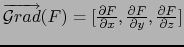

suivant: Le Laplacien : laplacian
monter: Les expressions de plusieurs
précédent: Les expressions de plusieurs
Table des matières
Index
Le gradient : derive deriver diff grad
derive (ou diff ou grad) a deux paramètres : une
expression F dependant de n variables rèelles et un vecteur de dimension
n indiquant le nom de ces variables.
derive renvoie le gradient de F (
 si n = 3).
Exemple
Déterminer le gradient de
F(x, y, z) = 2x2y - xz3.
On tape :
derive(2*x^2*y-x*z^3,[x,y,z])
Ou on tape :
diff(2*x^2*y-x*z^3,[x,y,z])
Ou on tape :
grad(2*x^2*y-x*z^3,[x,y,z])
On obtient :
[2*2*x*y-z^3,2*x^2,-(x*3*z^2)]
On obtient après simplification avec normal(ans()) :
[4*x*y-z^3,2*x^2,-(3*x*z^2)]
Si on veut connaitre les points critiques de
F(x, y, z) = 2x2y - xz3, il suffit de taper :
solve(derive(2*x^2*y-x*z^3,[x,y,z]),[x,y,z])
On obtient :
[[0,y,0]]
Documentation de giac écrite par Renée De Graeve